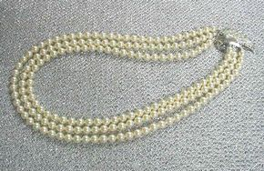
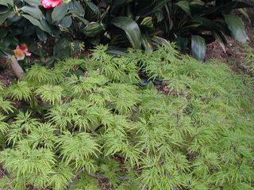
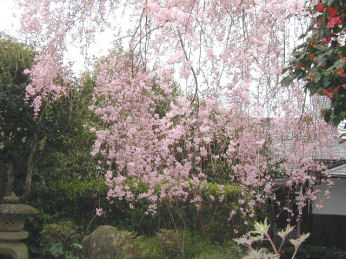

雑記録帳 １５
NTT光プレミアム、光℡に変更（６月２７日）
雑記録帳１６へ
| ７月１日 アドレス変更のメールを書くことに終日かかる。その方を思い出し”その頃”を思い出して書いた。 あの頃と今は世の中が随分変った。何と歳月の流れの速い事よ！ サーバーを変ってプラスになった事、 おかしなメールが入らなくなった。静かに自分の日常を記すことが出来る。新しいページを作る予定だったけれどフエードのアプレットが開かなかったり画像が抜けていたりの気になる事もいっぱいある。姪から電話があった、ホームページを開いても進んでいない、病気じゃあないかと心配をしていたと言う。解約したのだけれどenjoyさんは私のページを公開して下さっている、複雑な気持ちだ。 昨夜お野菜を届けて下さった中尾さんによってインターホーンが切れていることが判った。２７日ＮＴＴの工事の際のミスと判り今日直してもらう。広島は待望の雨になった。メールを頂いた四国のナックさん良かったですね！すだちが元気になりますように！ |
| ６月３０日ＰＭ８時２２分 お世話になっているリンクの方々への連絡が終った。 皆様にご迷惑が掛かるけれどお許しを頂きたい。 今日６月３０日で「enjoy」とお別れです。丸４年、私を此処まで育ててくださったスタッフの皆様有難うございました、心から感謝申し上げます。 昨日ビッグローブのＨＰと親切なメールのサポートでＨＰのファイルを転送することが出来た。 アクセスカウンターは”０”から始まった。何処まで自分を見つめながら歩めるか？ このホームページの内容は自分の正直な生きざまに尽きる。起こった事、思った事、したい事、などあらあらしい自分史みたいなものです。今後とも宜しくお願いいたします。 ６月２５日 真理ちゃんの誕生日、メールでおめでとう。私はHPの整理をしようと取り掛かったがアプレットの不具合でストップになった、暫くいじらないのでやんじいさまにメールでお願いを出した。 公園でこっそり頂いたくちなし！ ６月２４日 夕方久し振りに公園散歩道を一周した、くちなしが今を盛りと咲いていた。今日はこの間ユニクロで買った長パンツの裾上げをした。ロックミシンの調整に時間が掛かったが出来た、ともすると引け腰になっている自分を見出す。自分は年寄りだと思い込む前に、落ち着いて何でもやってみる事だ。今夜NHKの「人口減少社会」を見たが長野県の町の良い例を見てほっとした。 その後雑誌を読んだ中で共感する言葉に出会った、それは若いダンサーの言葉だったが「只一度の命の内に人は何処まで到達出来るのか、それは兎に角走り出してみなければわからない・・・・・」 おこがましいが私が最近考えて居る事がそれによく似ている。何時終るかわからないこの年に至って、NTTやプロバイダーを変更するややこしい手続き （次々書類などが届く）各社の ID、パスワード、その他必要な約束事、に HPを止めた方が良かったかな？と不安な思いがボーダーラインを上下する。工事が終って設定の人が来てくれるらしいからそれを待って見よう。全てはそれからだ！？ |
| ６月２２日 用事が有って街に出る、今日はバスを利用した。ささやかな買い物を済ませ本通りを歩いてみる、昔の名前の懐かしいお店も有ったが若い人向けに彩られた明るい照明の店が並んでいた。街角の花屋さんでクロトンの鉢植えを見つけた、黄緑色のクロトンは３本立てで見事だった。女店主と観葉植物の話しに花が咲く、銀座にもお店が有ると名刺をくれた。今日は大分歩いた、帰りもバスにしてみた。つり革につかまりゆらゆらと平衡を保つ運動を久し振りに楽しんだ。家に着いたら３時間が経って居た。 夜 真理ちゃんからハワイの写真をメッセンジャーで送ってきた。あたたかい結婚式の有様が判る。来月HPを移動してから特集アルバムを作りたい。 ６月２１日 夕方来客あり、送って出たら雨になっていた、小雨程度だが草木がホッとしている様だ。キャノンのプリンターを使ってみる、A4 写真プリント、何とか出来たけれど使いこなすのには慣れが必要の様だ。 ６月２０日 雨が降らない 今日も蒸し暑かった、タンクトップで終日過し買い物の時だけ上に何かを羽織る。この際着る物の整理をしようと思いたつ、１年中を通して着る物は大体決まっていて着易い好きな物に偏る。季節毎に整理をしたら シンプルライフを楽しめそうだ。 ６月１９日 クロトンの新芽日に日に大きくなる。 昨年スーパーで買ったクロトンが冬を事無く過し天辺で切れていた芽が成長を始めた。上の緑一色だった葉も変色が始まった。もともと暑い国の植物で昔も作ったがその時は愛情不足で枯れた、今年はセントポーリアのケースの横に置き間接的な光を受けて暮した。新芽に万歳！ ささやかな事が日々の力につながる。 昨夜プリンターが届きインストールも済ませて下さった。未だ使っていないがマニュアルを見ながら月末までに慣れたい。DVDへの書き込みも教えて頂く。 風邪気味で頭が鈍く張り切れない、時間さえあれば最近のパソコンはリードが解り易いから少しづつ関心の有る事を勉強をしてゆこう。 Meは作業に活用したいがどうなる事やら未定。 |
６月１７日 昨夜も２時近く就寝したので朝７時のアラームはちょっときつかったが早めに起きシャワーで体を目覚めさせた。 午後になりリニューアルオープンしたデオデオに行く。古いプリンターが幾らクリーニングしても字がかすれて不安なので新しくしたい。ユニクロにも寄りシャツを２枚買う。町の並木は緑が美しく、窓を開けて走っていると風が爽やかだ。野菜などの買い物や眼鏡屋さんでメガネのねじの調整をして貰ったりの２時間余りの行動は結果的にさほど疲れなかった。車は重宝だ、体のコンディションを整えておいて、これからも大切に利用して暮そう！ と、あらためて思った。 ６月１６日 労働力調査（総務省統計局）の人が来た、お父さんに昔詩吟を習ったとか言うので安心して上へ上がって貰い、おしゃべりをした。私は対象にはならないと昨日統計室へ電話で断ったのだが書き込む条件が無くても必要らしい。帰られた後心を許しておしゃべりした相手に不審を抱いた。彼女は自分の事詩吟の事はしゃべっていない、誰かに噂を聞いて話題にすれば成り立つ会話だったのに、夫の写真や私の絵など見せたり回顧的な話しをした私は阿呆か馬鹿か？自分の私生活も話している、それはまさしく疑う事を知らぬ幼子かボケ老人そのものだ。自己嫌悪に陥った。 昔もこれと同じ体験をした事を思い出した。 １０年余り前私がハーブを夢中で栽培していた頃、家計調査の調べに協力をして下さいと一ヶ月家計簿をつけて協力した事が有る。あの時の人と話し方接し方が全くよく似ている。調査員の在りかたには一定のルールが有るのかもしれない。省みて思えば”相手の関心事に入り込む”と言う接し方だ。 国勢調査の時又来ると言っていたので気をつけたいが、この頃こう云う気配が多い私自身に要注意。 |
| ６月１５日 日中は夏めいてきたが朝晩は薄ら寒さを感じる。タンクトップ、Ｔシャツ長袖シャツなど出しっ放しの状態が此処何日も続く。ストーブは今日掃除してしまったが、梅雨冷の日もあろうかと床暖房のカーペットは敷いたままです。 今日 ＮＴＴの出先機関の会社から入会手続きの連絡通知が入った。月末の工事、他 が重くのしかかる。私はどうしても 通らねばならない所に差し掛かった。 ２０００年１０月以来お世話になったプロバイダーに連絡する仕事だ。 テーブル（表）と言われても判らず、携帯片手に電話で質問した日々が鮮明に記憶に残っている。スタッフのお名前が並ぶ、助けられ教えられて此処まで来た、感謝の他無しだ。 主だったＮＫさんにメールを書いて送った。夜７時半お電話を頂く、手続きの事ＨＰのＣＤ・Ｒの事、丁寧に教えてくださった。変更に踏み切った主だった理由をお話した。 この実働出来る命は 長くて後１年余り位なのにと思うと申し訳ない。そんなことで一日が終った。 ６月１３日 終日片付け仕事に費やす、月末に光プレミアムの工事に来ると電話あり。 思い切って踏み出す積りだけれどＵＲＬが変わることになる、内容の一部もこの際を利用して整理をしなければならない。 モデム返却、 無線ルーターは光対応になっていたので一安心。ＫＤＤＩ、ＡＵなどの変更なども有り普通だったら面倒くさいが先に立つが経済的な結果を考えて実行に踏み切る。果たして如何なる結果となるか挑戦です。 夜和恵さんから電話、ハワイの挙式での話を聞く。彼のご両親のプレゼント 海辺の前夜祭、篝火がたかれ、波の音を聞きながらバイキングのご馳走、飲み物、なまバンドにボーイさんのサービス、と 行き届いた配慮に素敵な楽しい思い出が出来たようだ。 彼のお父さんが「これで娘が出来た」と仰ったそうだ、恵理も「私にもお父さんが出来ました」と言ったそうだ。 良い話と思う！ 今日帰って来た恵理は、披露宴のＢＧＭの音量が小さかった事など、自分で設定したプログラムの一部が不如意だった事にがっかりして落ち込んでいる。 世の中そうしたもの！まして外国、インターネットで連絡して決めて 完璧なんて有りはしないよ。何事もいかに周到な計画と確認が必要かを人生の出発点で学んだと思う。 それでよし！ 私の 遠い昔のフアッションショーでカメラマンが最後の大切な写真の場面を、大きいカメラに取り替えた途端、場内の感動場面に打たれてカメラの蓋を取り忘れ、ウエディングドレス以降、金屏風前のフィナーレの写真はパーになり取り返しの付かない苦い思い出が蘇った。 今はそれがむしろ懐かしい思い出です。 時 は救いであり、薬でもあると思います、明日に向かってGO- |
| ６月１１日 今日も休息に終った。セントポーリアの植え替えと思ったが、気が乗らず終日を過す。只夕方になりフルーツゼリーを作った。おみかんの缶詰だけだけれどレモンも入れて酸味を利かせた。夜和恵さんから電話が掛かる、息子とも話せた。ベールの下の花嫁の涙を見たといっていたが皆で楽しく踊った話しもしていた、写真を見てからゆっくり雰囲気の想像をしましょう。先ずは終ってめでたしめでたし。明日明後日と帰国するでしょう。 ６月１０日 家族になったベゴニア・ウエルトニエンシス 夜明けにプチが必ず起こす、多分５時前頃だと思う。戸を開けて外に出し又寝床にもぐりこむ。今朝は１０時半まで寝てしまった。 起きたが頭がふらつく、左後頭部首筋で脈打ちがする、耳に近いから嫌なものだ。ポカリを飲み耳に指を突っ込んで圧迫したりして刺激をしてみる。 足裏つぼや背中のごろごろマッサージ器も使ってみた。愈々微小脳梗塞の範囲が広がったか？最近多いこの症状を異常として受け止めよう。食事も考慮に入れよう、今日は間もなく収まったが この２，３日無理をしている、と感じていたので軌道修正だ！余り他人さまの事にまで手を出すまい。年なのだから 私に何か事が起これば、ご近所に迷惑を掛ける事になるから と心に誓った。おしゃべりも疲れの原因になりそうだ、私は一人が一番安定する。 今夜は美空ひばりさんの歌を聴きつつ森光子さんの話しに懐古に浸った。 ひばりさんは偉大な人だと思う。 今日はハワイでは彼のご両親主催の会食の筈だ。 明日が本番！時差を見たら－１９時間と有った。とすれば今頃は就寝中 どうぞ明日は良い一日になりますようにとお祈りする。 |
| ６月９日 日中の温度は３０度と報道されたが意外に過しやすかった。 今日は月一度のお薬を頂きに午前１１時病院へ行く、帰途県立美術館へ寄った。駐車場で林さん井上さんと出会い思いがけない偶然に感激する。光風会を観る、Ｋさん奨励賞！ 展覧会を見終ってホールで雑談し別れたが絵の仲間と会えた事はハッピーだった。 午後休息後梶さん宅で約束の土のブレンドを済ませる。その後玉川さんお抹茶を持って来て下さり久し振りのお手前となった、が使っていなかった茶道具にカビが生えていて熱湯消毒をしたり・・・ これからは時々楽しめそうで感謝！ ４時半 千葉から電話、これから出発 と、父子の声を聞く事が出来た。目まぐるしい一日だった。 ６月８日 猫の額ほどの庭の片隅にどくだみは存在する。季節感が有って植物家族の中に加えられている。白い十字の花は清楚で美しい。 明日は息子親子がハワイへ発つ日だ。恵理のお父さんの代わりにバージン・ロードをどんな顔をして歩くだろうか？！最愛の弟を失ってから彼は言葉が少なくなった。照れ屋さんだから心配だけれど何とかうまくやってくれますように！ 昨日赤玉や腐葉土を４袋も運んだのがこたえた、私は自分の体力の限界を知った。 いい気になって無理をしてはいけない。 年は現実なのだから、と思いつつも今日はシャッターの柱棒を外し、全開にして玄関前の植物達の写真を撮った。 スパシフィラムが奇麗に咲き新入りのベゴニアに語りかけているようだ。これも私にとっては重労働だった、ゆっくり行動した。疲れて昼食後テレビをかけたまま眠っていた。 |
| ６月７日 花家族の話！今日は一重の柏葉紫陽花 昨年は忘れられていた。大きな木の陰で眠って居たのだと思う。今年、とみちゃんから送られた八重の柏葉紫陽花が見事なのに驚いて探して気が付いた時、小さな緑の花芽（２ｃｍ）が３個付いていた。少し成長をした段階のものがこのページにも載せてある。下向きだったのに自力である朝、立ち上がった、支えを立てた。気を付けて水遣りは怠らなかった。（その都度写真に撮ってある）支えの棒をペンチで切り、美しい佇まいになった。 昨夜暗闇に白く浮き上がる姿に思わず写真を撮った、今が一番良い時だ！と思ったから。 そして今日はあの八重の柏葉紫陽花、緑の花に変化しつつある重そうな花首を５つ切り取った、弱らない内に。既に二節目に新葉が出ている、この後は横浜に送る予定だけれどどうしようかなぁ！？と思っている。 近所の方達も植物に夢中になる季節、今日は梶さん玉川さんのお使いをかって出て、赤玉土や腐葉土などをホームセンター迄買いに行った。小さい白いアンスリュームが有った、欲しかったが目を瞑った。昨日この街の花屋で迷った挙句、可愛いベゴニアを買ったばかりだ。 未だ花付きがさびしいからもう少し先で此処に載せます。今の季節は植物に愛情を寄せて暮す生活が一番！答えが目に見えて返って来ます。体がまだ動くから、休み休み楽しみたいものです。 梶さんの植え替えもしてあげる予定、セントが疲れているのでこれも命の管理をする責任が有ります。 |
| ６月４日 必要があってパソコンに付いてくるマニュアルを出した。 パソコンのやり方は、何とか少しは解って来ているようだけれど、読んで見ると知らない事も多い。慣れと失敗が現在の自分のパソコン暦に繋がっているようだ。 この年で記憶は難しいが、必要な事をノートに書けば少しは役に立つだろう。 インターネットで物を買う場合でもいっぺんで中々すっきり出来ない。だんだんIDやパスワードが増えて来ていて、手帳につけて大切にしているのにその手帳を探す事もある。 昨日は今までに無い文字がとらぶっておかしくなり慌てた。急ぎのメールがあったので久し振りにシステムの復元を試みた。これも過去の失敗からの拾い物です。マニュアルを見て面白がって、矢鱈な事をすると大変な事になると思いつつ、無知の好奇心で二つのパソコンの間を行ったりきたりしています。 今日は横浜の３人が成田からハワイへ飛んだ筈です。恵理も明日は彼と出発、心配すまいと思いながら一日中気になっています。 パソコンに夢中になって居れば忘れて、何とか日が速やかに経つ事でしょう。 パソコンは正直な良い友達です。 |
| ６月３日 落ち着かぬ日が続く、明日は第一陣が出発、天候は勿論、諸々が気になって老体は宙に浮く暮しをしている。この際とMeにビルダーを移しこちらでHPを書くことにした。上書きコピーが出来なくてあれこれやって漸く済んだ。集中して居ると他の事は忘れられる。XPで新しいシンプルなHPを作ってみたい。結婚式の映像がたくさん出来るだろうからなどと考えている。いつも一歩前を見て歩きたいけれど実力は無いから、どうどう巡りに終ると思う。１０日までは洋裁はお休みにして風邪気味の体を労わろう！井上さんからお嬢さんの結婚写真が送られてきた。こちらは孫の結婚式です。６３歳の彼女は充実して今が一番良い時！と楽しそうだった。私にもその時が有りました。 貴乃花が逝かれた、ご冥福を祈ろう。５５歳 大鵬、柏戸、貴乃花と回顧の思いが流れる。 ６月１日 スーパーで買い求めた黄緑色のポットマム（菊） ８時前に起きる、昨日午後３時半、屋根やさんが３人で来て細かい所のペンキ塗りを仕上げてくれた。完全に終った。その時縞ハランを掘り起こして貰って置いたので今朝約束をしていた近くの３人に電話を掛け９時、取りに来て貰う。皆さんが欲しいと言って下さるので嬉しい。どくだみの花が咲き、梅雨も近い。狭い庭で皆とあれこれ朝の植物談義は楽しかった。早起きをしよう！！ 午後先日から誘われているＮＴＴに電話して”光りプレミアム”の話を聞く。速い！より安いが魅力、私には余り関係ないと思ったけれど、日々進化する現代は怖いようだ。明日がわからぬ歳なのに好奇心は何処かに潜んでいるらしい。パンフレットを送って貰う事にして先ずパソコン関係の維持費 幾ら使っているかの計上をした、無関心では居られないと感じるボーダーラインに在る事が解った。 洋裁の合間の一休み、１０日までは休息、この際努めて散歩をしよう。昨日は日暮れに公園を１周で精一杯だった。食事が不規則になっているから体力が芳しくない。 糠漬けの季節、食欲増進食品だ、食事に欠かせないこの食べ物に念を入れたい、大根胡瓜を漬けて一安心する。 |
| ５月３０日 簾越しの光りが夏らしくなってきた、夏を感じる。ゆっくり休息をとろう。予定が無い事は何と幸せなのだろう！当分は開放感に浸りボケ～～っと暮そう。 昨朝和恵さんから荷物安着の知らせがあり、労をねぎらわれた。私は自分が自分に挑戦した結果に満足して居るのだけれど、緊張する仕事はもう無理と思った。その日 洋服が出来上がって一息ついた時休息しようと、降りてテレビをつけたら（３時１５分）シベリアに向かう貨車の場面が出た。（ＮＨＫスペシャル）終戦時の物語が始まっていた、関口知宏さんが出演いていたので見る気になり１時間半、それは９０歳になられる渡邊俊男さんのドキュメントだった。１８年位前に下関美術館で香月泰男ノシベリア・シリーズを見た当時の感動が蘇り、何度も涙した。 今、戦後６０年南の島で日本兵が生きている情報が伝えられている、ゲリラに阻まれて進捗しない交渉が気になるがその方たちはどんな思いだろう。私と同年輩なので切なるものがある ５月２９日 展覧会 午前中は庭木の剪定をする、椿、曙 まゆみの枝を短く切った。もみじの誘引もした。朝食を遅く摂っていたので午後１時半美術館行き、最終日なので心忙しくタクシーで行く、田村さんの絵はマチエールに工夫がされていて素敵だった、清水さんも良かった。県民文化センターのふよう会の展覧会も見て帰途についた。今日は全てタクシーで移動した、市から頂いているタクシー券を使った。 |
洋裁部屋へ |
５月２８日 アクセサリー 仕事は最後になって大きな問題を抱えて居た。 絵の場合私はやりすぎて（懲りすぎ）一番良い状態を通過してしまう、それは理想？を追い求める為の失敗だ。此処！と思った所でストップできない。客観性が乏しく冷静さが失われ焦る、その失敗を今回もしてしまった。最後の仕上げアイロンが難しい事に最後に気が付いた。一箇所ずつ仕上げて行くべきだった。現代の布地なら皺が寄らないからこの心配は無いが、４０年昔のシルク、それにボツボツの突起が有る、仕上げアイロンは難しい、それが見通せなかった。２，３日前から２階に上がるのが怖くなった。始めに水に浸けてあったので霧を吹いてはアイロンを掛ける事は出来たが、何回もそれをするうちにシルクの光沢が無くなる。長いドレスは筒になると裏返すのにも皺を気にして神経を使う。まして唯一のポイントの切り替え線は芯を貼って有るので奇麗に仕上げようと霧を吹くと小皺が出来、慌ててアイロンを当てるがおかしくなってしまう。体が入れば気にならないからと和恵さんが励ましてくれるが神経を消耗し尽くした。 昨日昼、何とか収拾してアイロン掛けは中止、出来上がったことにした。 ２時間掛けて洋服箱に収める。胸のふくらみに肩台を入れたり柔らかい布切れやトイレットペーパーを使って隙間を埋め宅急便に出せる状態にした、本番は６月の当日だ。後１０日余り、どうぞ無事で体に合うようにと祈るのみ。 アクセサリーは別便にして、２個の荷物を明日の午前中に届くようにお母さんの所へ送りました。 日展明日まで、田村さんから招待券が送られてきているので是非見に行きたいと思っている。 |
|  | ５月２６日 帰ってきたマジョリカパール ３年前最後のお客様に自分用にとって置いたヘビーシルクでフォーマルにお召しになるドレスをお作りした。厚地のデシンで取って置きの布だった、５.５ｍ有ったのでロングドレスと上着のアンサンブルに仕上げたが１年以上掛かった。 何十年も続く最後のたった一人のお客様、古い長いお付き合いである。 ドレスをお作りした後、結婚式に出られることになり上等の本物パールをお持ちだったが、私のこの３連を（糸が切れていたが時計屋さんで直して貰う）と お持ち帰りになった あれ以来親友を亡くされたり、ご家内にご病人が出来たりご自身も弱くなられ、お互いご無沙汰に過していた。 この３連ネックレスは子供の結婚式に２回だけ私が使ったものだった。 殊によると差し上げたのかも知れないので、今更申し上げにくくて諦めていたが、先日三越でマジョリカパールを見たが良い物が無かったのであの翌日、思い切ってお電話をしてみたのだった。 ご主人もご本人も高齢になられ何やかとお忙しいのに探してくださった。お母様の古いたんすの着物の引き出しに入っていたけれど、直してないと翌日電話を頂き、早速宅急便で送って下さった。”先生からお預かりした物”と当時のメモまで一緒に付けて有った。 あの方のお優しさが有難かった。 一昨日、着いた日に近くの宝飾店に持って行き、今日出来上がった。 これでお母さんのアクセサリーが決まった！ Ｙさんのお洋服を又縫う事も出来そうだ。 あのアンサンブルの写真も見せて頂ける。 ”叩けよさらば開かれん” 感謝です。 |
５月２２日 私が選んだnecklece 1 午前中は真理ちゃんにメッセンジャーで写真を送ることをならう、速い。 午後は恵理ちゃんにmsn.messenger７．0 のダウンロードを勧められ実行、再登録も済ませた。今日はお母さんが留守だったが孫の頼もしさで一歩前進！ パスワード、秘密の答え、おかしな並び文字のチェック等、老人には目や頭が痛くなる所も通過 （実際頭が痛くなった）”Ｓ”ノートに控えも記録した。 やはり一昨日の長時間の外出は疲れたようです、今日も洋裁はお休みにしました。一日中雨で薄ら寒い日曜日でした。 夜は義経の後、森光子の放浪記を見る、ビデオも取った。気が弱くなった時に見た いと思います。明日からは洋裁最後の段階になります。 洋裁部屋へ |
| ５月２１日 ２０日三越のイタリアン・フェアーに行く。 屋根やさんに留守を頼んで午前中に出かけたが帰宅は５時をまわっていた。初日なので混んでいたが孫のアクセサリーに主眼を置いて居るので普通の時とは心がけが違う。念入りに見て周りデジカメで候補の物を沢山撮った。恵理はイルカが好きなのでベネチアングラスのイルカの置物が沢山並んでいる所で何枚も撮る。私は自分用に２０００円の真っ白いマグカップを一個買い求めた、紅茶の色がきっと美しいだろう！持ち手の所が赤いベネチアングラス。売り場の人がさだまさしの若い頃に似ていて、商品と一緒に写真を撮らせて貰った。全く私は気が若いよ！ 恥かしいから年を言ったら大叔母と同じ年齢だとにこやかに答えてくれた。各階のフェアー商品を見て周り、サービスの飲み物券も使わずに帰ってきた。駐車料金が３時間無料だったが追加料金１０２０円、こんな事は初めてだ、しかし疲れて足が棒になった。 ピンクのビーズの束と七宝の留め金のネックレスを入手した今回のフェアー、自分が作った服を引き立てる仕上げの作業と思えば快く、お陰さまで一件落着の感あり。 帰宅したら既に屋根やさんは仕事が終って帰られた後だった。 私は矢鱈に若者語を使うので感じが良くないらしい、ある人から注意を受けた。ヤバイは今後止めよう。掲示板を置いていたら非難が多かろう！日記がこう続いているのは自分の思いを率直に現代ことばを使ったりして楽しんでいるからで品良く在りたい等思わないのだけれど・・・・・ 今日嬉しいお電話を頂いた。大坂の友人が時々日記を読んで下さるらしい。今は三十路を越えたご子息が低小学年生の頃自分の新聞を作っていたそうな、ある日布教の人の話しを聞いて、その新聞の見出しに 「神にも名前があった その名はエホバ！」と書いて居た事を思い出したと言うお話し。何故かとても爽やかな風が心を吹き抜けてゆく思いがした。何でもおしゃべりできるのは高年齢だからなのです、さしさわりがあったらお許し下さい。 |
| ５月１８日 一昨年 柏葉あじさいを購入した、（雑記録７、５月８日画像）スーパー￥９８０円一本立て。始めて出あったあじさいだった。以来、投げやりに忘れていた庭の片隅の柏葉あじさい、今年は３本に分かれて花を付けている。 とみちゃんのあじさいをお手本に棒を立てた。支えが必要な事に気がついたからだ。 昨日は、雨の前にどうしてもしておきたい庭作業があった、粒状消毒薬撒布、咲き終わったすずらん、えびね、牡丹、さくらんぼなどのお礼肥え。その材料を買いにディックへ行き、帰宅後直ぐにオルトラン撒布、固形肥料施肥。６時 最近は日が長くなったので、ついでに裏庭のつつじの剪定や月桂樹、南天等の整理をした。笹も刈り込んだ、完全ではないが一応気が済む。何回も車の後ろまで”きりかす”を運んだ。 ついでにごみ用に小さく切り袋詰め３個。 暗くなる８時前まで掛かった。一気にやったので手足に震えが来ている。ヤバイ！軽いストレッチで調整しつつ、スポーツドリンク、と気をつける。 蒲焼の夜食を取ったが疲れは相当だった。早く休もうとしたが２階に上がる。結局２時まで気になっていたストールに挑戦、自分で羽織り一応デジカメで撮り和恵さんに送信、 聊か疲れて暖かい床に入った。 この日は午前中髪を染めて風呂に入っていたので、２度の入浴は控えた。 このように重労働をした日はストレッチ体操が絶対必要だ、以前重労働した夜中に足が立たなくなり、布団の上で転んで左足の小指側の骨折をした。あれ以来重労働の後はケア体操を必ずするようになった。 ”自分流太極拳” ゆっくりストレッチである。毎晩寝る前にもゆっくり動作で５分～１０分体を動かす。作業中も途中で時々伸びをしたり深呼吸をする。水分補給も忘れない。 この頃私はとても用心深い。 |
| ５月１５日 穏やかなしかし底寒い日が続く、５月も半ばを過ぎた。プチがシランの向こうで日向ぼっこ、お腹を温めている。 夕方から２階に上がり洋裁、裏付けの最後の作業に掛かる。上下を接ぎ漸くバランスの取れた重みになった。裏が付くと安定感があり今まで神経質に気になっていた脇縫いが気にならない。明日は一気に仕上げたい。 ５月１６日 一昨日 暇な時に屋根の点検をと頼んで置いたら、昔から顔なじみのＹさんＩさんと社長が屋根に上がり見てくれた。 親戚づきあいの様な間柄なので一人住まいの私にとっては夫亡き後 ”いざ”の時に頼れる人達だ。 瓦棒葺の屋根なのでボツボツ塗装の時期が近い。 私の一番の心配は台風、去年の体験は思い出しても身震いがする。ご近所の瓦の飛ぶのも見たし前の家のスレートの瓦のかけらを家の庭で幾つか拾った。 自分の寿命が何時まで持つのか判らないので如何しようかと迷う、 あれこれ考えたり相談したりした結果、少し早いが塗ってもらう事にした。 これで此処が終の棲家と決定した訳にもなる。 独り暮らしは日々厳しくなってきているが、ストレスは排除しなければならない。 この夏の気象状況がどうぞ平穏であれと念じつつ見積りを受け取った。格安にしてくれている、あまり贅沢は言うまい。今が一番暇な時らしく水曜日から作業に掛かるそうだ。 ドレスは今夕漸く出来上がった。後、飾りのリボンを付けたいので今週いっぱい掛かる。真理のロングドレスの仕上げも含めて来週には送れそうだ。和恵さんの上着は後まわし、ドレスだけ着用し肩に薄絹を掛ける事になった。 |
| ５月１４日 季節、すずらんの前に遡る。 今年は裏庭のつつじが２本奇麗に咲いた。裏の家の奥さんが窓ガラスが赤いので開けてみたらつつじが満開！本当に楽しい。と報告して下さった。 私もガラスに明るい色が映り、驚いてあけて何枚も写真を撮った。とっぷの写真は光の強さにぼやけてしまい、花の形の判らない写真になったけれど、嬉しい記念に載せよう！ 洋裁は最後の土壇場で思わぬ事が起り、この二日苦慮している。長いドレスはアイロンかけが難しい、古いシルク布 おまけにボツボツの刺繍がコンシルフアスナーをくいこんだり、アイロンかけの時、凹凸が出来てしまう。縫い代のボツボツ（刺繍）の部分をカットして厚みをとらないと表に響いてしまう。昨日今日、始めになすべき作業に戻り、長い洋服を持て余した。余りいじると布地が傷んでしまうから作業順序が大切だ。よい勉強になった、と思う反面、こんな大物はもうやらないよ！？ 何しろ１回ぐらいの仮縫いでは無理だものと、疲れから不満が出る。自分から買って出た仕事なのにこの愚痴は和恵さんには言うまいと心に誓った、なのになのに！夜 電話を貰ったら、開口一番見えにくくなった目を愚痴った。言っても始まらない、あぁ老人になったものだ。 昨夜、「人間ドキュメント」で９３歳の男性の方の生き方を見た。確りした信念の元に洗浄機を作る会社を経営し、長年一緒に製作してきた高齢の技術者もそれぞれベテランがいて、新しい注文をこなしている。人柄や考え方に刺激を受けた。若い時からの物の考え方、信念、経験が何時も機械製作の原点になっている。一人住まいのその方の唯一の楽しみが３年前からの社交ダンス、毎週背広に着替えてダンス教室へ、年に一回の発表会でタンゴやワルツを踊られる。お相手は女の先生、とても楽しそう。ＮＨＫ、再放送来週 |
| ５月１１日～１２日 錆びた鉄の６尺の梯子を物置から庭に運んで４日経った。 先日日よけの簾が壊れた、それをはずし取り替える為の１段階の作業だった、壊れて軽くなった簾は一人で何とかはずせた。新しいすだれ（１６０×１５７）はずっしり重い、つり金具、巻上げ紐も取り付けて吊るすばっかりに用意は出来ている。 屋根やさん来ないかな？ 出しっ放しの梯子は邪魔で危ない、現に出した日に不安定で倒れて青しだれが半分折れてしまったのだ。足元を固定して動かないようにしたが、その日、簾を抱えて梯子に乗って中段まで上ってヤバイ！？と感じ直ぐ中止した。落っこちて足を折ったらどうなる！？ 今日、布教のＭさんとＹさんが見えたのでお願いしたら二人掛りで吊って下さった。「待てば海路の日和」である。上に上がって頂きコーヒーを入れ恵理の未完の服も見て頂く。Ｙさんは洋裁をなさるから感心して下さった。信者の方は気を使わなくても通じるものが有るので、開けっ放しでお付き合いが出来る。甘夏を皆で食べ聖書の副読本を頂き、少しお話を聞く。だんだん近づいて行く終末に備え心の準備もしたい。 私が簾が掛け終わった時 「神様に感謝！」と言った所から ”神”について話が始まった。神も主（しゅ）も本当の呼び名ではない、エホバと聖書に記されていると言われた。私は田鶴姉の昔の聖書を持ち出して文語体の茶色になった紙をめくった。３０年前松沢さんの家庭集会に招かれた時頂いた口語体の聖書はリビングの片隅に置いてあるので、Ｍさんの聖書とその場で３時代の聖書が並んだ事になる。３つとも中身が少し違うようだ、聖書の訳者が違うらしい。でも私にはそう言う事はどうでもよい様に思えた。只 やはり昔の姉の赤線が所々引かれた古い聖書が私には聖書らしく重みのある物に思える。普段開いた事もないのに何かの折開き、辿って行くと昔 集会で聞いたお話を思い出す、み言葉にも遇えるし素直な心になれる。 古い聖書は読みにくいけれど郷愁にも似た懐古の純粋さに繋がる、これからは宝物になるかもしれない。 |
| ５月１０日 フロリバンダの黄色いバラが咲いた、日射しが強いので直ぐに開ききるから短い茎を切ってキッチンで愉しむ。去年スズランを沢山切花にして３軒のお宅に届けたが今年は花付が少ない。 母の日に高田さんをお迎えに行ってスズラン、つつじを見にきて頂いた、お帰りにマランタの鉢植えといかなごを私の大好きな磁器の蓋付の器に入れラッピングしてお土産にして大変喜ばれた。シランと再びスズランの株を堀り、それも持ち帰られた。我が家のスズランのように沢山増やしたいご様子だ。それにしてもお疲れになったであろうと気になる。 今日真理ちゃんがシカゴから出した絵葉書が着いた。奇麗な夜景、記念に載せて置きましょう。 シカゴは晴れたり曇ったり雹や雪が降ったそうです。１００階以上のビルから夜景を見たと言う、このビルかしら？ |
| ５月７日 昨日まゆみさんからお花届く、新茶を添えて 夜℡をしてお礼を言う。 息子は未だ会社から帰って来ていなかった。連休も仕事だったと言う、暫く話をしていない。あの人が還暦を迎えた！ 私の還暦 その当時を思い起こす、店を持ち昼夜働き通しだった私は自分の為にやりたい事があったので、お祝いをと家族に言われた時自由な時間を！と巻紙に書いて回覧して貰った、孫のお守りはしないよ位の軽い意味だった。前年還暦を迎えた夫は仕事を辞め趣味でやっていた詩吟の道を選んだ、その時の彼の言葉が”何の為の人生か？” だったと記憶する。働き詰めで人生を送る、実直な男が長年会社勤めの抑圧された歳月に決別を告げ開放された時だった。火薬取り扱の資格が有るので定年後も仕事への誘いは多かった。しかし夫は強かった嫌もおうも無く彼は最後選んだ人生へ直進した。それから２０年穏やかなその性格で書や歴史の勉強を楽しみ、吟の小さい組織の中の会員の信望を得て最後まで人生を謳いあげる事ができた。本当の人生は還暦を期にスタートしたようなものだった。盆栽から始まった自然との関わり合いは百姓仕事で完成され、斃れるまで作物作りで畑仲間とも楽しい朝夕だった。８０歳の誕生日を過ぎて進行がんが判り、その半年後に帰らぬ人になった。今 息子に思いを重ねる時、激流の世相の変化に答が出ない。 未だ子供にお金が掛かるから親の義務として働く日々が続くであろう、奥さんも共働きで今を乗り切ろうとしている。 私は自分を律し一日一日恙無く歩む事だ。 お世話になるのは最後だけ、最長日数２週間と望んでいる。病名はともあれ８０歳を越したから医者も協力して下さるだろう。 私はそれまでは日々愉しむ方法を紡ぎ出すであろう。体に少々の痛みが有ろうとも今が一番自由であり自分を活かせる時かもしれないと前向きに考える。 昨夕梶さんが茹でた筍を下さった。 おかかで煮て置いた。叩きごぼうも作った。 外は雨が上がり陽が照り出したようだ。ＰＭ１時 高田さんはお留守のようだ。 |
| 5月5日 晴天に恵まれたフラワーフェスティバルが今日で終った。多くの観光客が集り広島はさぞ賑わった事であろう。 私は相変わらず庭の植物と洋裁の日々 今朝9時に宅急便が届いた、大きな花の荷物だった。神戸のとみちゃんから柏葉アジサイが送られてきた。春一番にいかなごの佃煮を送ってくれた、後日 再度大きく育ったいかなごが送られて来た！以前私が、皆さんにお裾分けした話をした事があった、私の性格をよく知っている彼女は私の暮しのサポートをしてくれているのだ。「何かの時に誰に上げてもよいから」送ったと言う。 この佃煮が有ると食が進むし冷凍庫で保存し、ピーマンや茄子を炒めるとき一箸加えただけで美味しいおかずが出来上がる。 先日広島やから甘夏を送った時私はちょっぴりいかなご代をしのばせた、荷が着いて電話の向こうで気を遣う彼女に、私は高田さんの話をした。「モンステラを喜ばれお礼を頂いたからそれを入れたのよ」 そして植物の話が盛り上がった。 ５本咲いているアジサイは誠実なとみちゃんの母の日にからませての贈り物！ 花が終ったら地に植えるようにと書かれている、この木は大きくなると聞いている。一昨日和恵さんと話したばかりの柏葉アジサイ、花が終わりかけたら横浜に送ろう！と思いついた。和恵さんが引き継ぎ育てる事になる。先夜 昔、道雄と植えた ”はなみずき” が今、奇麗だと話していた。昨夜も、この連休は草抜きや庭の手入れに過し、ゴミ袋３個が出来た、土のある暮しは癒しと言っている。横浜なら大きくなっても大丈夫だろう。 すずらんが匂やかに咲き始め、連休が終ったら高田さんに見て頂こうと明日を予定していたが明日は雨の予報でがっかり、すずらんの匂いを是非味わって頂きたいと思っている。「いかなごの佃煮は大好物だから貰う！冷凍庫へ入れときんさいよ」高田さんにこの話をしたら喜んで下さったお返事です。廻り巡って皆が潤う話です。 |
| ５月３日 憲法記念日 広島は5日までフラワーフェスティバル 上天気で初日凄い人出だったらしい。 テレビで見ていたら、曙さんがパレードの車上でニコニコしていた。 さくらんぼが色づいた、真っ赤になるのを待っていたら真っ赤なさくらんぼは小鳥に食べられた。で、この色では未だ甘くないと思ったけれど写真を撮った後、私が食べた。この２年小鳥が全て食べている、私が食べたさくらんぼはちょっと酸っぱくて大人げない自分にぴったりだった。残りは１１個位、もう小鳥と競争せずに自然に任せましょう。 斜め前の家のＫＢさんが玄関脇のマメツゲを刈って下さった、こじんまりと収まった。隣組のステンレスのゴミ箱が出来て設置場所も決まり、ＫＩさんが集金に来られた。 10軒で2800円づつ支払う。 恵理の服（ロング）は順調に進んでいる、今週中に仕上げになる予定。 真理はデトロイトからロスへと旅行中、彼女はニュージーランドの1年のホームステイ、と学校の児童教育のボランティアで頼もしい行動力を身につけたようだ。働いてお金を貯めて外国行き、友人や知人との交流を重ねて成長して行くだろう。遠い若い日に船で行きたかった私にとっては実に眩しく羨ましい話だ。 |
| 5月2日 椿の新芽が勢いよく伸び始めた、一本ずつ刈り込みをしないと狭い庭の空間が無くなってしまうと、朝食前に剪定を始めたらふらふらになった。形はどうでもよいから何しろ実行あるのみ。長い枝、伸び始めた新芽も構わずに切り落とした。小さく切り、燃えるごみ２袋が出来る。 ブランチを摂りながら考えた。何事も楽しむ！？ためには備えが必要だ。植木屋さんを頼む余裕が無いから自分で庭をいじくる。ぎりぎり精一杯の体力で頑張っている。先ず出来る事が感謝ではないか！ 家の平戸つつじは西側の家がくっついて建てられているので、その家の２階東窓から見たらどんなにか奇麗だろうかと思う，そちらを向いて咲いているのだ。その家が建つ前は空間だったからおみかんもバラもよく出来た、我家より大分低い土地なので広かったお庭や抜けるような青空が満足な日々だった。先住人の浅野さんが逝かれお庭が分割されて家が建った。あれから１４年が流れた。この頃ではむしろ台風の時に心強い存在になった。プラスとマイナスは組み合わさっているのだと思う。カーテンを閉め切って居られる住人はきっと気を使っていらっしゃると思うが（お付き合いは無い）私は出来るだけささやかな借景を楽しんで頂きたいと考えている。 友人から電話で毎日があっけなく過ぎてゆく焦りの話が出た。体の節々の痛みも原因の様だ、痛い所をマッサージするように、手当てって言うでしょうと話したが、老いて今の時代を生きて行く事は本当に生易しい事ではないと思う。 |
| ５月１日 朝目覚めたら雨の音がする、牡丹を痛ましく思い遣った。 何にでも終わりは来るのだ、せめて共にくらす間はベストで付き合いたい。 起き出でてカーテンを開け身支度を整えた後雨で散りかけた花たちを切りさよならをした。今年も有難う！ ８時前に朝食を用意する事は久し振りだ、ジャガイモをチンして皮をむき、ボールで潰す、胡瓜はスライスし軽い塩、玉葱は半分微塵に切った。りんごは小さいイチョウ型に切りレモン汁をかける、マヨネーズで和えて紅茶を入れ、テーブルロール2個これにミディトマト2個、ヨーグルトの朝食を摂りながら郵政問題のテレビを見る。国や子孫を思う古い人間だと老い先短い自分をいとおしむ。昨日Ｍさんから頂いた春菊や黒豆のお礼の電話を掛ける。 上に掲げた置いたセントポーリアの名前が判った。 3年前植物園まで持って来て下さった記念のセントポーリアの苗の内の一つ、シマーフロスト、は（ユリコ）という名前のお花と判明！出所 ＬＩＬＹさん、大切にしたい。 |
| ４月２９日 春真っ盛り 庭を見やれば春真っ盛り！肥料を遣らなかったので牡丹の花が小さい。珊瑚もみじはすっかり新緑になり樹下の草達に程よい日陰を投げかけている。牡丹に日中はビーチパラソルをかける、強い陽光にうなだれてしまうのだ。今年が最後！何時もその思いで写真を撮る。その後で咲き終ったら肥料をと考えている。幾つまで生きる積りか？ 尼崎の悲しいニュースにテレビをつけない日が続いた。洋裁は眼が思うように働かず重荷に感じながら遣らざるを得ない責任感で進めている、６月過ぎたら眼科医に相談したい。皆、白内障の手術の結果は良い、と言うが私は針目等は通るのだ、多分仕事に懲りすぎるのが原因と思う。 昨日病院へお薬を頂きに行った帰り、広島やへ廻る。先日、サマーオレンジが入ったと連絡を頂いた。夏みかんのサラリとした味わいをサラダ感覚でヨーグルトととでも一緒に召し上がれ！と夫の故郷等へ発送を頼んで帰った。百ｍ道路は５月のフラワー・フエステバルの準備か、見慣れた街路樹の間々にテント等が点在していた。 昨夜、気分転換にセントポーリア８株植え替える。 |
| ４月２５日 どうも私は完全主義の様だ、自分を持て余す。今日は一日製図研究をした。不要の有り布を使って、ケープ、ドルーマンスリーブのジャケットなどを裁ってみたりした。日が暮れて巻きロックののミシンも試み先ずまずこれで良かろう！という所まで出来た。食事もいい加減にして過し、夜の１０時迄掛かった。今日は隣組のごみ問題の話し合いも有ったので、ちょっときつい一日になった。 ご近所の方々も皆が高齢になってきているから、年長だからと甘えてばかりも居られない。何事にも無理なく応じられるようにゆっくりした日常を送りたい。ゆとりが必要だとつくづく思った。 洋裁にのめりこみすぎない様にしよう。 ゆっくりやっても充分間に合うのだから「気負わない事だ」 と体に反比例して意気込みがエスカレートし易い自分を戒める。 ４月２４日 実に忙しい！ 椿、太郎冠者の剪定を済ませる。のどかなお日和につい庭に魅かれる。昨夕えびねをＤカメラで何枚も撮ってみた、黄えびねははっきり写らないがこの花はハランをバックに顔を写せた。さぁ３時半２階に上がる時間だ、今日はスカート部分に掛かろうと張り切ったが夕方来客、雑事におわれ仕事にならずに終わる。 朝、屋根やさんが「あさり」を届けて下さった。夕食に頂く、みの大きい美味しい貝だった。感謝 ４月２２日 ｐｍ２時どうも風邪気味の様だ、頭がぼんやりして意欲なし、回覧の通信欄に健康は早起きからと有った。７時８時のアラームを耳元で聞きながら起きたのが９時過ぎ、午後にならないとハッキリしない自分と決め込んでいる為の大きいマイナスかもしれない。 １１時ブランチを摂った後に風邪薬を服用してみる、旅先でアイロンを掛ける時重宝しそうなテレビショッピングをやっていたので恵理の為に電話で聞いてみる。要は２番目のシルクのドレスを仕上げた後の課題だ。 外は上天気だが風が強い、昨日観葉植物を玄関前に出したので強い風に彼らを気遣う。 庭の木々の葉は伸び始め花々が一斉に咲きそうだ、写真が撮りたいが何しろ私は洋服を縫わなければならないのでこれから二階に上がろう。コーヒーを飲みパソコンを開け此処までで午後の仕事に掛かる。この日は上身頃をクリア、しかし眼が悪い為手間取った。 |
|  | ４月２０日 昨夜はドリンクを多めに飲んで休んだ、今朝の目覚めは良く、朝食を考える頭になっていた、珍しい事だ． 外は雨になっていた、午前中春雨、午後曇り、夕方は夕焼けが奇麗だった。 福岡 震度５の余震が又起る、福岡に独り住むあの方はお元気だろうか？メールも出さずご無沙汰している。 今日の作業、昼過ぎストーブをつけて体をリラックスさせコーヒーを飲みすっきりした所で２階に上がり、２枚目の服に掛かった、丸４日間休養した事になる。今日は補整と裏取りが済ませたいので裏布のアイロン掛から始まる。２時間タイムを守らないと足腰の不調を来すので５時、少し歩く予定で外に出る。梶さんのカーテンが開いていたのでチャイムを押したら散歩はフイになり、暖かい応接間で６時半まで世間話を喋り込んでしまった。帰り際に夕焼け空を二人して眺める、白い夕月が顔を覗かせ雲が流れる。日の経つのが速いと嘆きともつかぬ言葉がどちらからとも無く出た。 夕食を摂った後、テレビで時が過ぎ夜なべは１０時から１１時迄で予定分終る。 明日から縫いに入りたい。 ４月１９日 青しだれ（もみじ）背の丈５０ｃｍ肥後椿の足元に広がって緑が美しい。 午後３時、セブンイレブンから黒猫宅急便で恵理の洋服などを送った。 今日明け方、夢を見ていたようだが左後ろ頭（くび）の脈打ちが速く目覚めた。血液どろどろかな？と考え注意深く起きあがり台所へ、ポカリをコップいっぱい飲んで又横になった、動悸は治まった。 熟年以後の方はどうぞこれを憶えておいて下さい。私はスポーツドリンクを常時備えて置いてちょっとおかしい時は飲みます。普通の水分より吸収が３倍早いと聞いて居ります、確かに効果が有るようです。風呂に入る前や寝る前後も１００ＣＣは飲みます。 今夜からは枕元に置いて休もうと思っています。この２、３日調子が悪いので洋裁に気が行きません。体を動かす用事をする様にしています、草むしりなどは一石二鳥って言うところです。 |
| ４月１８日 弱音の日 今日も何故か疲れに似た状態で仕事に掛かれなかった。午前中新しい隣組組長さんが回覧を持って来られごみ問題について市以外の業者が参入する提案のアンケートが回された、大型ごみもある種のものは収集するという、明細は未だ解らないが「リサイクル資源」として活用するなら賛成とした。郵便局へサプリメントの代金振込みに行く。さちさんへＹさんの句集の小包も送った。 町の中スーパーの前に二つも駐車禁止の立て札が立った、４月 何とは無しに町も新年度に変えられてゆく。 灯油の配給車が回ってきたがもう買う必要もあるまい。残油を大切に使おう。恵理への洋服の小包、明日送る事にして夜携帯へ電話をする、帰宅途中、車走行中らしいが、気をつけてねの言葉に 「マイクがあるから大丈夫」と元気な返事が返ってきた。 頭が重いなぁ、今は洋裁以外には余り神経を使えないと思う。 この間、岸恵子さんが人が来るとサービス精神が働き疲れ切ってしまう話をしていた。だから 「何か仕事をするのには孤独が好ましい、自分は尽くすタイプだから」 あの方は作家になられた、私は職人だけれど同感だ 来客がこんなに応えるとは私も老いたものだ。 しかし高田さんとの５時間はかけがえの無い大切な時間だったからこのぐらいの反動は仕方あるまい。 ここいら辺で、”まけてたまるか”を カッとばそう。こう云うときは風呂でゆっくり全身をほぐし休む事だ。 ４月１７ 今日は次の仕事に移る前の休日にした、朝食（11時）中華饅頭１個と先夜煮込んで置いた手羽もと馬鈴薯玉ねぎの鍋に牛乳を入れ温めたものとトマト 小２個 膝が痛いので余り好きでもないがコラーゲンとやらに拘っている。夕食はホットケーキとコーヒーお稲荷さん1個、八朔半個、有り合わせで済ませた一日だった。今夜は２階に上がらずゆっくりテレビを選んでみた。義経と頼朝との出会い、イケメンの義経に政子がはっとする所など面白かった。スタジオパークで財前さんが予告していたから今日は期待して見た。教育テレビでは池辺晋一郎さんの時間にエルガーの朝の挨拶を聴き、オーケストラだったので途中からビデオに取った。私のＨＰのトップの曲だ、音楽は大きな慰めになる。シルクロードでは気の遠くなるほどの長いスパンで繰り返される人と自然との埋もれた歴史に最初は興奮したが最近は静かに諦観するようになった。 夜、高田さんから昨日疲れただろう！といたわりの電話を頂く、お嫁さんにと持ち帰ったモンステラとゴムの木は息子さんご夫婦が、ガラス天井の良い場所に上手にセッティングし ”嫁さんが一枚一枚葉を拭いて居たよ” と伝えてくださった、心が温もる。息子さんご夫婦の住まいは昨日私も拝見してきたので植物も快適だと想像できる。趣味で育てた観葉が場所を得て愛される。 とても嬉しい。 ”わしもうれしゆうてならん” 何回もお礼を言われる高田さんはすずらんが咲いたら又来られるそうだ。 |
| ４月１７日 １６日 セントポーリアの先輩 高田さんの訪問を受ける 先夜高田さんからお電話を頂いた、駅前のホテルで会おうとのお誘いだった。その時私の頭は限られた時間内の洋裁の事でいっぱいだったので、時間に余裕の無い現在を申し上げたらしい。昨夜お電話をした折 ”貴女の作った洋服が見たいから明日タクシーで行く、”とのお返事が有った。そして昨日２時、我が家へきて下さった。３年振り、先ず狭い庭を巡り椿を愛でられ、すずらんがいっぱい芽を出しているのにびっくりされ、すずらん、ほうちゃくそう、ベゴニア等掘り起こしビニール袋に入れて忘れるといけないと玄関に置いた。居間でセントポーリアを見て頂いたり色々な話がでる。９０歳と言われたが美顔術を試した話で大笑いになった。毎週泳いでいらっしゃるそうだがそのお仲間も、その話に拍手をしたそうだ。二階に上がり洋裁の現場と出来上がった洋服を見て頂いた。写真も何枚か撮って、降りてコーヒーを飲む。モンステラが欲しいと言われるので貰って頂く事にした。運ぶ運送屋さんをタウンページで探して、来て貰い５時、見送り方々私が先導してお宅まで運んだ。決断と行動力に圧倒された。お宅の居間でかつてセントポーリア大会で大賞を取った折りのトロフィが並んだ飾り棚は見事だった。お友達に作って頂いたと言うステンドグラスの家の形の奇麗なスタンドに明かりが灯りそこはかとなくムードに包まれた中央に思い出深いセントポーリアの大賞のご褒美のクリスタルの額縁が作品を守って白く輝いていた。数あるアルバムには過去が美しく秘められ、選んで見せて下さる写真は私も見た事があるお顔が並んでいる。セピア色のその昔のお振袖の結婚衣装の写真には美しく豊かな暮しの昔が偲ばれた。皐月の盆栽に夢中の時期も有ったらしい、見事な写真の数々に並でないセンスと努力を知った、何をされても秀でていらしったのだ。終わりに４階の屋上を見せて頂く、野菜やお花、菊、ばら、発泡スチロールを波板で深土にと工夫した箱での栽培だ。太い棒が林立している、つたい歩きに便利にと考えたそうで杖無しで作業を楽しまれる工夫だ。わが家から掘って来た植物達も此処におさまり、やがて今日の日を思い出されるよすがになるのだと言われた。小さい物置小屋もあり疲れたらそこで休んで又作業されると言う。私が知らないこの３年の間に彼女は脳梗塞で倒れ、病院暮らし、リハビリを経て今日を迎えておられる。セントポーリアも二ケースが健在、ねずみが花を食べるのでと駆除剤も置いて有った。６時半おいとまをする。多くを学んだ一日だった。 |
 |
４月１４日 昨日とは打って変わって暖かい春の一日になった。 この間お寺さんの未悠ちゃんを撮ったので昨日から久し振りにプリンターを使ってはがきに印刷するるのだけれど色がいまいちなので今日も朝から試した。プリンターがＸＰでは調子が悪くＭeのパソコンで作業、以前撮った分も一緒に印刷しお届けした。若奥さんが写真をみて”はがきですね”と笑顔で仰った。プリンタが古いので、とか何とか誤魔化したが、可愛い赤ちゃんを撮ったからにはお見せしなければと言う古い考えが先行してこう云う結果になる、ちょっと照れくさい言い訳なのだ。可愛い育ち盛り、いっぱい写真は撮られるであろうから老人の慰みのデジカメに笑顔を見せてサービスをして下さったのだと割り切ればよいのに私はまじめにむきになって答を出さなければ失礼と思ってしまう。良い色を出そうとあちこちでファイルを試した事は勉強になった。 午後３時過ぎ洋裁にかかる、コンシールフアスナーを付け終り、纏めの段階に入った。明日で短い方のドレスは仕上がる予定、約二十日間掛かっている。残り布で上着代わりのストール的なものが作りたいが、巻きロックの勉強が必要だから後回しにして次の本命のドレスに掛かった方が良い、忙しくなりそうだ。 ４月１２日 今日も雨で始まった、春独特の雨も午後は曇天に変わる。プチの食料を買いがてらディック迄走る、川土手で紅白の幕を張りお花見をしているらしき景色等今年の桜写真の撮り収めをした。折りよく車線が広くなっている所に一台路肩駐車をしていたので右に倣えとばかりに車を置き、橋迄歩いて曇った空濁った川面を写した。先日来桜の写真を大分撮り溜めた。 今日、スタジオ・パークで岸恵子さんが出た、大好きな人なのでビデオに取って置いて良かった。チャーミングな沢山のお話は楽しかった。話の中の孤独についてのお話に共感を抱いた。忘れっぽくなっているので２回繰り返し見て心を奮い立たせた、こう云う出会いが欲しい。 たまたまつけたテレビ番組から受ける恩恵は大きい。 新聞も無いし、テレビも余りつけない生活はシンプルで、やろうとする事に集中出来る。”やろうとする事”は以前より倍 時間が掛かるのだ。食事の支度、花達の世話、勢い他を省く事が 今、昔の暮しに近い状態になっている様だ、頭も整理されるように思える。 昨日はミシンやさんカップルに来て貰って古いミシンをお掃除して貰った、昔なじみのおじさんも白内障の手術をしたと話しながら、ロックミシンも調整してくれた。呼吸音が強いので、ちょっと気になったが一緒のＫさんが大丈夫だと明るく笑ったのでホッとした。 何十年も昔を思う！ 三人とも年を重ねたと温かく尊く思った。 ４月１０日 お寺さんの枝垂桜 曇天の午後カメラを持って近くを歩いてみた。桜が目立つが曇天の所為か色がさえない、お寺さんの古木枝垂桜が椿と共演している。実に見事！！ 散歩道の桜はもう葉が出始めた。桜につられて散歩道まで足を伸ばしたが帰宅して庭の海棠や黒椿を撮り終るころポツリと雨が顔に当たった。急いで落ち椿を熊手で集める。夕方から洋裁に掛かりよなべ仕事になる。 |
| ４月９日～１０日 お花見日和！！！ 今日は実にお花見日よりでした。桜は満開、天気上々明日が雨になる予報だったので何処も彼処もお花見の人群れでいっぱいだったでしょう。 私は家の椿が満開なのでその花見をしました。桜は明日車で見て来ましょう。 今日はミシンやさんに来て貰ってロックミシンの調整をしました。昔から顔なじみのＫさんは私が洋裁をしている現場を見て吃驚し喜んでくれました。ミシンの調整は直ぐに済み、今日一気に咲き始めた黒椿や孔雀椿、唐子、朴半、肥後等を切って上げ、新聞紙でくるみ車にそっと置き、持ち帰られました。唐子椿はカーネーション咲きで見事に大きくなり土の上に落ちても艶やかですが、花が重すぎて落ちやすいのです。雨が降らなければ庭は其の侭に彩られて美しいのですが明日は雨とか、今日此処に載せた珊瑚紅葉も既に緑の新葉が出始めて花も付いています。一日の変化が著しい庭の植物は今、魅力的です。裏の隅のかいどうも明日あたり満開、裏の家の方がお花見をして下さるそうです。何もかもいっぺんに咲いて春を謳いあげます。天災で憂鬱だった先日までの後ですから、このお日よりは素直に喜びましょう。今日は遂に半袖になりました、毎日がゆるがせに出来ない大切な洋裁は一回だけの仮縫いでは不安ですが、確かめながら楽しんでいます。夕方Ｎさんがお野菜とフルーティな香りの紅茶を届けて下さいました。話は高齢化の悩みになり易いです。 目下の所私は課題を抱えて緊迫した日々が続きむしろ幸せな日常を送っているのかもしれません。パソコンは夜中にかかる書き込みですが、優雅にエスプレッソを味わう時間も有り充実しています。 |
|
４月５日 いっぱい咲いた椿達 地に置けばそのまま絵になる顔（かんばせ）を拾ったり枝先の花を切ってガラスのテーブルに並べて楽しむ。合成の勉強は今は夢中になる時間が足りないから又の日に楽しむ事にして、唯写真を撮っただけだけれど可愛い！ ３日矢板のいくさんから電話を頂く。 ４日パソコンを始めたＡ・Ｙさんから℡、日記を書き始め印刷したと報告あり。 今日はお客様が有った、午前は筒井さんと話し、梶さんが午後見えて６時まで歓談、明日は安芸津の桜を見に出かけるとか、ホテルの催しの一つらしいが食事付きで美しい桜見物と聞く。 漸う春本番になったようだ、時間によっては未だストーブが必要で油断は出来ない。洋裁は昨日上半身襟ぐり袖ぐりが終る。下準備に掛かった時間が二日間、本縫い処理は３時間だった。 物事は斯うしたものだろう準備万端が物を言う、全て妥協は許されない。 |
１００メートル道路のミモザと見たが・・・・・？ |
４月２日 今日は玉川さんが縞ハランを取に来られて歓談し昼間が過ぎた。結局の所、縞葉らんは根っこが硬くシャベルは役立たず小さい根だけ持ち帰られた。お茶席の話から着物の話など私の知らない世界の事を聞かせて頂いた。私の昔買って置いた輪島蒔絵の食籠や向こう付け椀等を出して見ていただく。仕舞いっ放しなのでカビのようなものが出ていて管理の注意を受けた、子供達に早く渡したい、手入れが大変だ。 夜ＮＨＫ の日本のこれから、を見る、外人女性が言っていた”１？年前の日本は良かった”に共感を抱いた。教育の現場、貧富の格差についても心が痛い。１０時から入浴で、いきぬきをした、所詮老人は心を痛めるだけの事だと冷静に戻った。 今日は洋裁にならず、ミモザも確認に行けなかった。 ４月１日 とても良いお天気の一日だった、午後、月一回のお薬を頂きに病院行きを決行、２時過ぎに家を出る。先ず郵便局へ寄る。そして街なかへ、ＮＨＫを右に見て右折する前に信号待ちを利用してミモザらしき木を遠くから撮る。 病院で、先月の血液検査結果を示される、全てに異常無し、検査表を頂き、お薬、膝の貼り薬も出して頂いた。 帰途百ｍ道路を走りミモザを探したが私の眼は木々の新芽とミモザを見分ける事が難しくて、うろうろは出来ず、と言って心に駐車する余裕も無く諦め、ついでに広島屋に廻る。葉付きのサン・フルーツが出るのは４月末と情報を得た、店頭のかご盛りの清見を買う。絹屋にも立ち寄り裏布や糸を買った。帰りにわが町の桜土手を見やったが未だ桜開花の雰囲気は無かった。 ガソリンスタンドで満タンにして貰い、ちからできつねうどんやいなりずし、おまけにお萩を買う。 久し振りの街中を走り、あちこちへ寄って用事を済ませた。お天気に助けられて快適な２時間を過せた事に感謝！ 夜二階へ上がり明日の作業の下準備をした。 |
{kind=link}